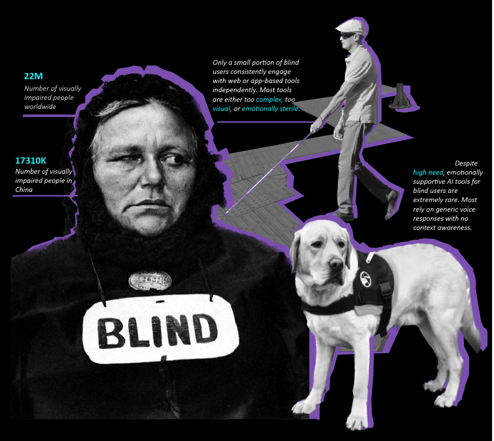
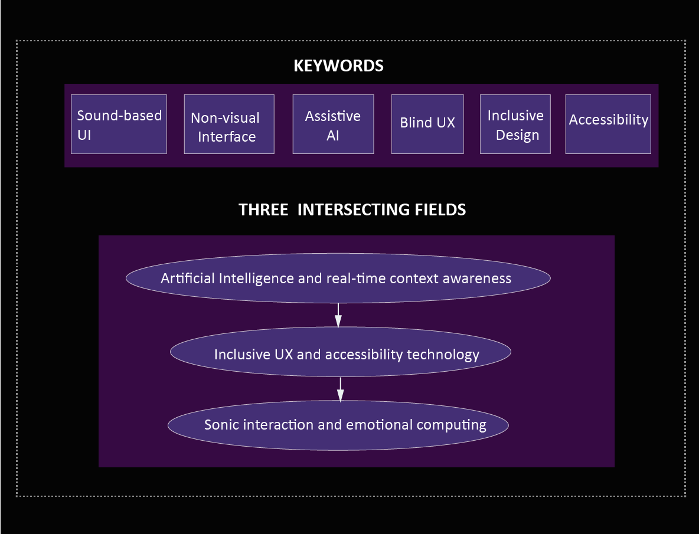
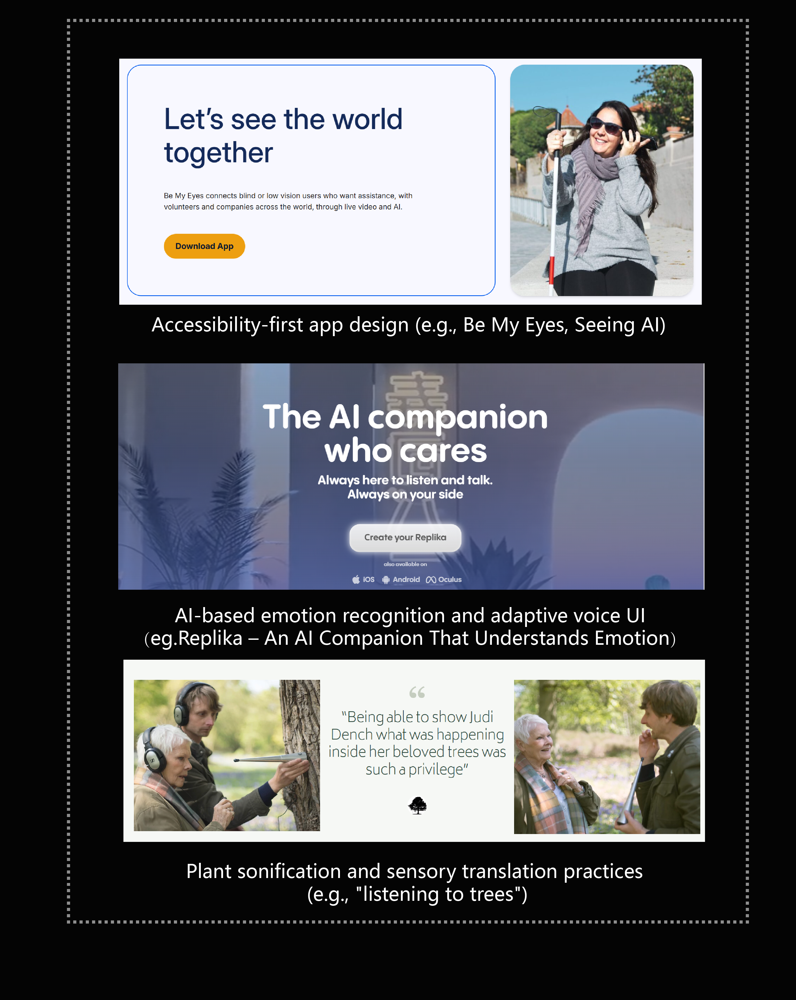
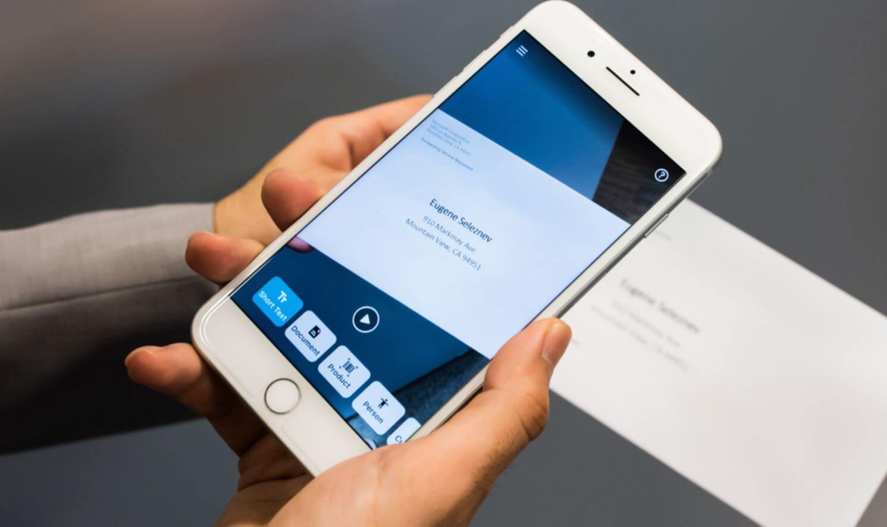
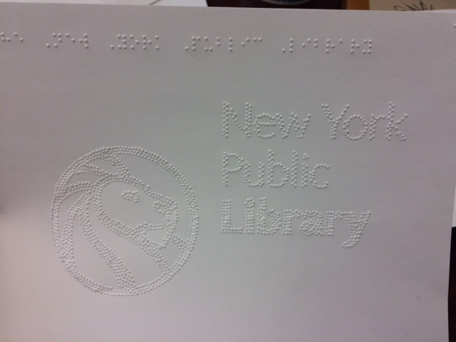
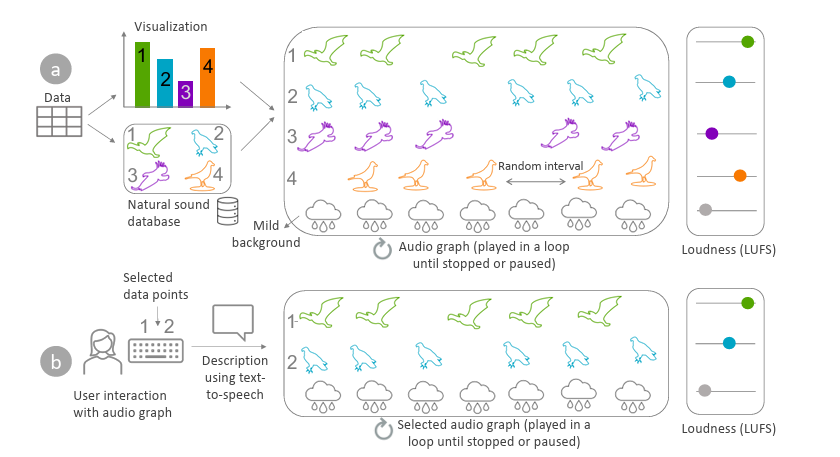
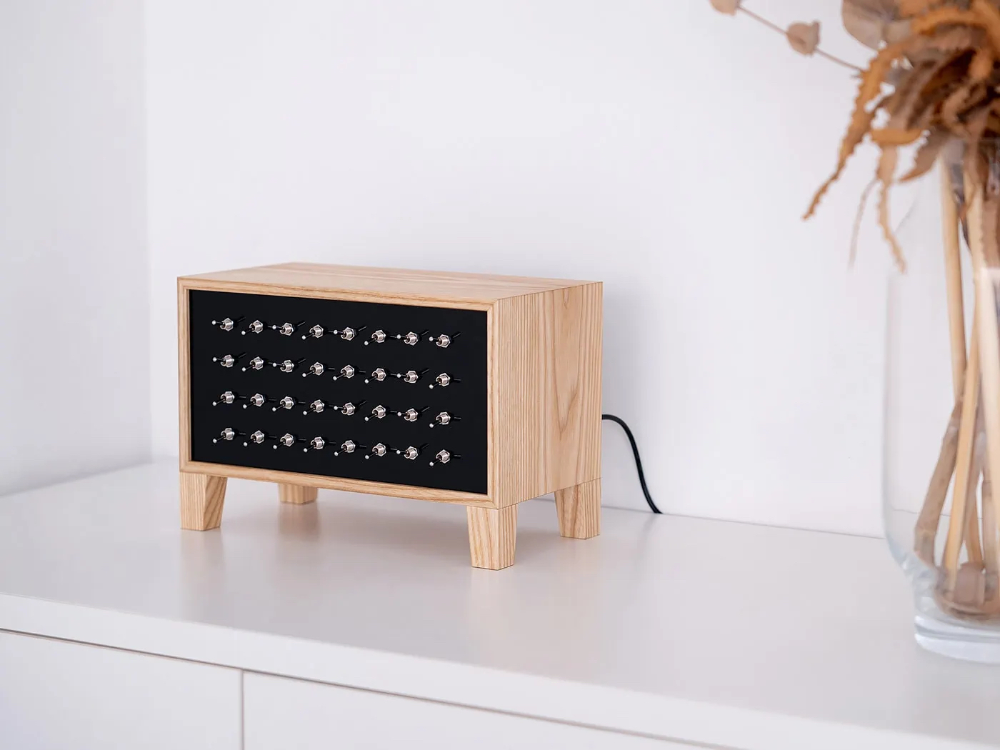
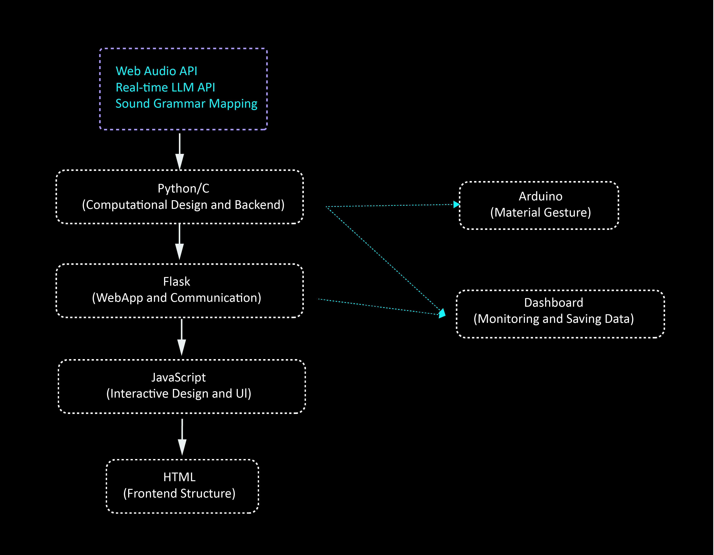
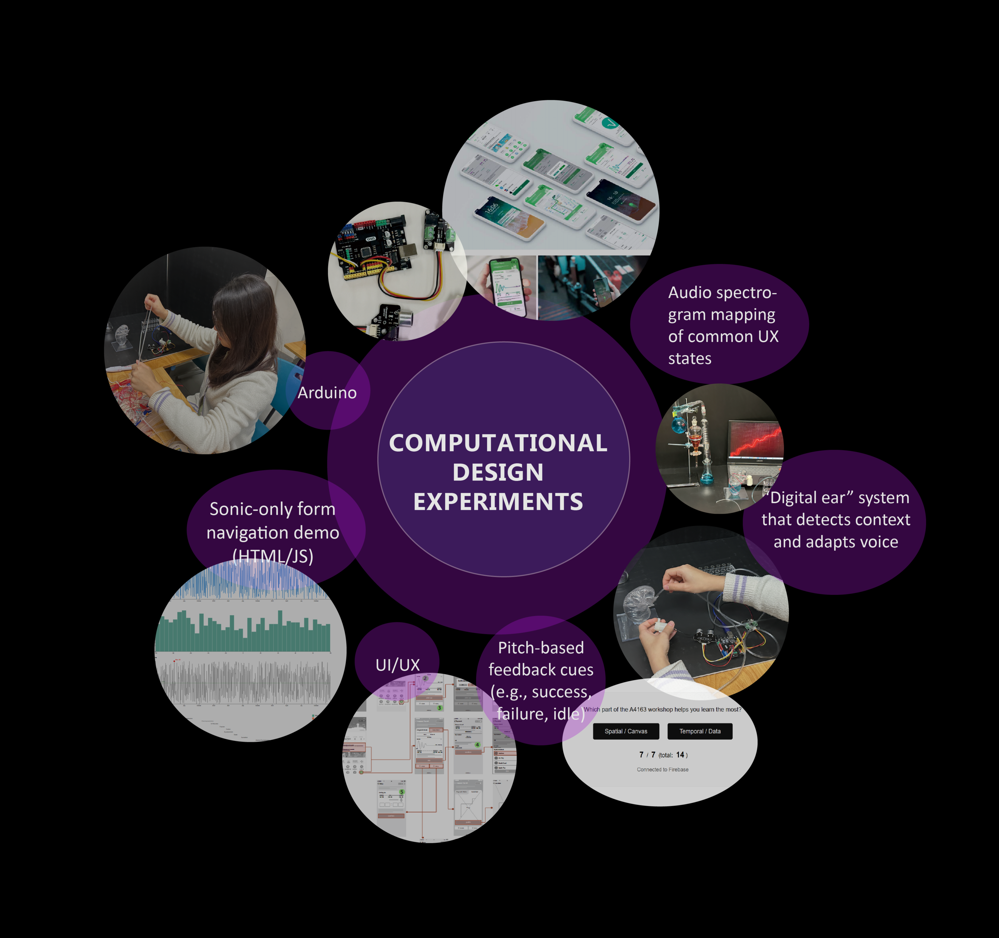
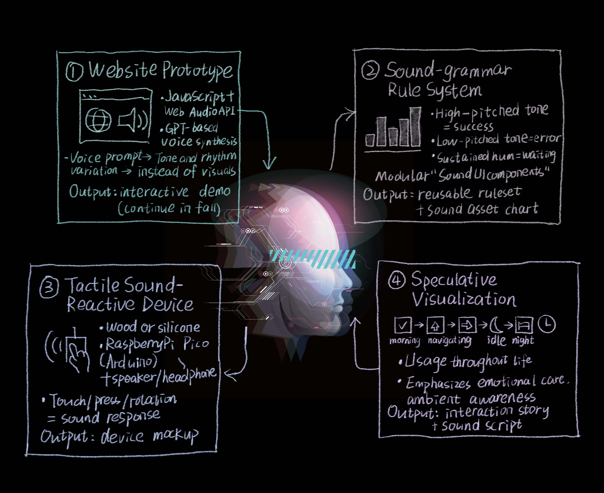

- How can AI-powered interfaces better serve blind users by using sound as the primary communication mode?
- In what ways can sonic feedback replace or enhance visual UI to support independence, accessibility, and emotional well-being?
Research Questions

Keywords and Intersecting Fields

Historical Lineage

Community of Practice
Platform Tools
Microsoft — Seeing AI
Its strength is availability: point-and-describe lowers friction for reading and scene cues. But precisely because it works well in episodic tasks, it entrenches a "caption as truth" habit where recognition is centralized, thresholds are opaque, and the user is funneled into waiting for a single authoritative answer. This narrows the interactional space to request/response and obscures model uncertainty and failure modes. My system treats its outputs as provisional signals—rendered as graded, spatialized sonics—so users can modulate granularity, hear confidence, and decide when to pivot rather than accept one-shot captions as the default.
Be My Eyes / Be My AI
Human-in-the-loop plus strong visual Q&A removes barriers for many micro-tasks, yet the exchange remains transactional and answer-maximizing: get the description, move on. That logic pushes cognitive risk onto the user when the model is wrong and, over time, deepens dependence on black-box mediation. I recast the help layer as ambient and revisable—short, low-burden sonic cues that can be re-queried, with user-controlled escalation to human support. In this framing, "assistance" is a spectrum of situated checks rather than a single, definitive description.
Practitioner-Advocates
NYPL "Dimensions"
Dimensions proves that when blind practitioners author tactile media, authorship and literacy shift to the community. The risk is that the model can still rely on fixed spaces, specialized tools, and a tactile-first skill ladder that newcomers may not have—leaving portability and broader participation unresolved. I adopt the governance lesson (co-ownership and public pedagogy) but translate it into low-barrier "sound-making studios," where presets and mappings are co-authored, portable, and protected from enclosure.
Chris Downey
Downey's practice shows that sound and touch are not afterthoughts but primary structures for spatial cognition. The danger is the heroic universalization of those insights across wildly different acoustics; what orients in a calm lobby may overwhelm in a reverberant station. I keep the spatial ethos—sound as place-making, not beeps—but require situated validation across diverse soundscapes before promoting any cue to a default.
Academic Research
Penn State A11y Lab — Natural-sound sonification
Susurrus maps each bar in a chart to a distinct natural sound (e.g., different birds) and sets its loudness with LUFS so that perceived volume is proportional to bar height; the mapped sounds are played in parallel on a loop over a mild ambient background with random intervals. Users can then select one or more bars via number keys to isolate those sounds and request text-to-speech descriptions—an interaction model aligned with AISA actions (gist, navigate, select, details-on-demand).
The parallel "audio graph" helps users separate categories, but the design leans on loudness while the ambient bed and random intervals can complicate comparison at scale; the authors' own studies show loudness works best, interval mapping confuses, duration mapping slows ordering, and parallel streams should be capped to ~five to avoid overload—constraints that the figure's looping, backgrounded mix doesn't reveal. In applying this technique, I'd keep the parallel LUFS mapping but add rules that limit concurrent voices, suppress or duck the ambience, and privilege stable timing when users are comparing bars—so the interface remains legible beyond small N.
Artist/Speculative Practice
Yuri Suzuki — Ambient Machine
Yuri Suzuki's Ambient Machine proves that a tactile, layer-based approach to everyday sound can be inviting and legible: with banks of switches shaping volume, reverb, and tempo, it lets people compose ambience without screens. Yet the very elegance of this parameterized grid narrows what sound can communicate in an interactive system. It centers preset materials and a fixed control surface, making the user a one-way "composer" rather than a dialogue partner; it cannot express system intent or uncertainty, risks masking critical environmental cues outside quiet interiors, and places a memory burden on users to recall switch mappings—issues compounded by the lack of remapping, context awareness, and long-term fatigue management.
For a sound-first accessibility interface, I'd borrow the tactile immediacy and tunable layers but reframe them as a conversational medium. That means adding audible channels for confidence/intent, building anti-masking rules and context-aware sparsity, designing fatigue-sensitive timing, and enabling user-remappable controls paired with clear auditory confirmations. The sound library should be community-coauthored and governed (not just curated presets), while adaptation remains local and short-lived by default, portable on the user's terms. Finally, spatial cues and any haptics should be validated across diverse real-world acoustics and kept optional—ensuring ambience becomes an accountable interaction language rather than a decorative soundtrack.
Design Stance Distilled
Co-production over consumption; sound as primary structure, validated in situ; and power-aware defaults that make adaptation audible, keep traces local and ephemeral, and give users practical refusal and revision—not just permissions buried in policy.Relations with Precedent Studies
The project of my precedent study - "Measuring Diversity" - gives me the insights about caring more about those minorities. But I won't plan to build this project based on the precedent study since it is more algorithmic than what I want to present.My Project's Positioning
- Synthesis and Contribution
- Combines academic rigor with corporate critique and artistic inspiration.
- Offers a reinterpretation of assistive technology—from functional tools to experiential, emotionally supportive companions.
- Explicitly challenges the visual-dominant, screen-reader paradigm.
- Audience vs. Community
- Primary Audience: Blind and low-vision users. The design must prioritize their lived experience, participatory feedback, and emotional connection.
- Community of Practice: Includes:
- Corporate teams (Microsoft, Be My Eyes and etc.).
- HCI and accessibility researchers.
- Sound artists and speculative designers.
Situated Technology
This project is grounded in the CDP theme of alternative interfaces, proposing an auditory-first interaction system where sound—not visuals—provides presence, rhythm, and support. It relates to recent readings on sensory computation and experiential interfaces.
Methods

Computational Design Experiments

Visual Representation
- Spectrogram diagrams of interface states
- Flowcharts of auditory pathways
- Sound-icon grammar chart
- Draws aesthetic inspiration from sonic cartography and non-visual design language (artists like Yuri Suzuki)
Rhetorical Argument
The mainstream "assistive" paradigm remains sight-normative: it centers the screen, translates cursor-and-caption metaphors into linear audio, and shifts the cost of model error onto blind users. One-shot descriptions present caption-as-truth while hiding uncertainty; transactional Q&A frames the user as a requester rather than a co-navigator; and layered alerts produce memory load, vigilance fatigue, and new dependencies disguised as autonomy.
This project rejects that status quo. It asserts sound as the primary structure of interaction—not ornament—and treats assistance as ambient, revisable, and accountable. Concretely:
This project rejects that status quo. It asserts sound as the primary structure of interaction—not ornament—and treats assistance as ambient, revisable, and accountable. Concretely:
- uncertainty and intent must be audible (graded confidence, spatialized cues);
- users must control granularity and pacing to avoid masking and overload;
- cues are context-aware and sparse, validated in situ across diverse acoustics;
- the sound palette and mappings are community-coauthored and remappable;
- adaptation is local-first and reversible, preserving agency over time.
Brief Outline of a Potential Capstone Project

The Challenge
- Ensuring clarity and usability using sound alone
- Balancing emotional subtlety with functional clarity
- Building a believable, non-intrusive AI persona
- Need to further improve coding and audio feedback systems
Proposal — Spectrogram-Based Vertical Mural
Concept
A vertically oriented mural that visualizes sound-first interactions for blind users, inspired by audio spectrograms and ambient soundscapes.
Visual Structure
- Vertical flow (top → bottom) represents time-based user activities
- Color gradients correspond to tone/emotion shifts
- Waveform curves represent system states (idle, confirm, guide)
- Iconic symbols layered over tone paths show user intent/actions
Interaction Segments
- Morning Greeting / Context Check
- Navigation / Task Support
- Idle Listening / Ambient Awareness
- Shutdown / Sleep Ritual
Each segment visually encodes a sonic logic: pitch, tempo, tone, duration.
References
Sonification art (e.g., listening to trees, audio plants); Music notation + UX journey mapping hybrid; Google Sound Design Kit for tone categorization.
Tools & Medium
Designed in Figma or Illustrator; printed on vertical scroll (~36" tall); with legend (pitch=action, color=tone, shape=function).
Purpose
A visual translation of auditory logic; an emotional map of sound interactions; a centerpiece for exhibition.
Proposal — Sound-Reactive Interface Object
Concept
A tactile object for blind/low-vision users that responds to touch with sound cues—part tool, part companion.
Form
- Hand-sized, palm-friendly shape
- Soft wood or silicone shell with subtle texture
- Embedded microcontroller (e.g., Raspberry Pi Pico / Arduino Nano)
- Small speaker or vibration motor for feedback
Functions
- Touch = Confirm tone
- Long Press = Context-aware voice message
- Rotate/Flip = Mode switch (ambient / guided)
- Idle = Breathing pulse or gentle hum
References
Yuri Suzuki’s Ambient Machine; “Be My Eyes” haptic alternatives; metaphors of music box / pocket object / worry stone.
Material Qualities
Warmth, intimacy, calm; sounds tuned to natural tones (wind chimes, wood knocks, soft sine waves).
Exhibition Display
Placed next to the spectrogram mural; visitors can touch and interact; optional ambient audio loop.
Purpose
Demonstrates tangible AI interaction; offers poetic sonic feedback; bridges computation with sensory embodiment.